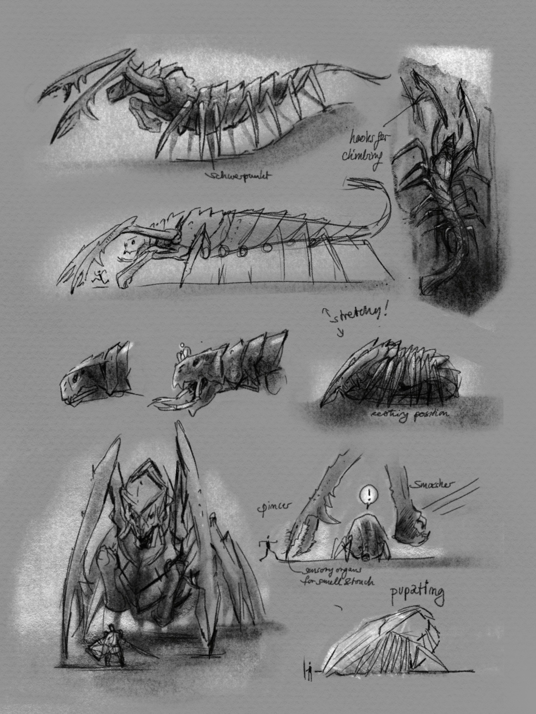

Also known as ulo mas varar to the parshendi are massive crustacean that dwell at the bottom of chasms of the Shattered Plains They are powered by a gemhearths a large valuable gemstones that are hunted by humans. They can grow fifth feet tall have 14 legs and huge rows of teeth, and they survive on dead soilders that fall into the chasms. They bodys where made this way to weather high storms( a brutal storm that can moves whole town and drop boulders on families).
